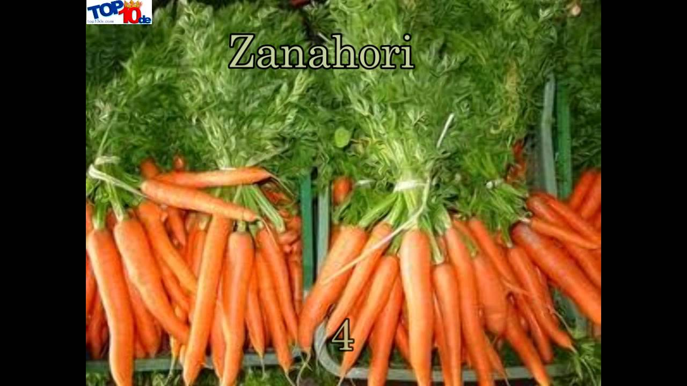

Vegetables | Pronunciación en inglés - SpanishDict
2020.09.14 13:19

Traductor Verbos Vocabulario Gramática Premium Acceder Regístrate Estás viendo los resultados para vegetable . Si quieres ver los resultados de vegetables , haz clic aquí .
vegetable
Escucha la pronunciación Añadir a lista el vegetal Escucha la pronunciación Diccionario Ejemplos Pronunciación Sinónimos Frases us Alfabeto fonético de SpanishDict (AFS) vehj - tuh - buhl Alfabeto fonético internacional (AFI) vɛdʒ - tə - bəl Abecedario en inglés (ABC) vege - ta - ble uk Alfabeto fonético de SpanishDict (AFS) vehj - tuh - buhl Alfabeto fonético internacional (AFI) vɛdʒ - tə - bəl Abecedario en inglés (ABC) vege - ta - ble Aprende más sobre pronunciación y el abecedario en inglés . ¿Quieres aprender inglés? ¡Aprende inglés de gratis! Traductor El diccionario de inglés más grande del mundo Verbos Conjugaciones para cada verbo en inglés Vocabulario Aprende vocabulario fácilmente Gramática Aprende todas las reglas de gramática Pronunciación Escucha miles de pronunciaciones Palabra del día grandeur la grandiosidad SpanishDict Premium ¿Ya lo probaste? SpanishDict Premium incluye: Hojas de repaso Sin anuncios Aprende sin conexión Guías de conversación Aprende más rápido Apoya SpanishDict Pruébalo por 7 días totalmente gratis Quéjate de este anuncio Quéjate de este anuncio Quéjate de este anuncio Palabra del día grandeur Escucha la pronunciación Mostrar traducción Subscríbete SpanishDict es el diccionario, traductor y sitio web de aprendizaje inglés-español más popular del mundo. © Curiosity Media Inc. View in English RECURSOS Traductor Verbos Vocabulario Gramática Palabra del día SOBRE Sobre nosotros Privacidad Términos Mapa del sitio Ayuda REDES SOCIALES Facebook Twitter APLICACIONES iOS Android- Importancia de los Vegetales
- 253 mejores imágenes de Laminas de Vegetales y Legumbres ...
- Vegetales | Vegetales24
- 'Chips' vegetales: ¿son más sanas que las patatas fritas ...
- Albóndigas vegetales -Mejor Con Salud-
- Vegetales – Incalfer
- Vallejo Frutas y Vegetales
- Frutas y Vegetales en Inglés - Abingles.com
- VEGGIE PACK Panamá – Delivery de Vegetales y Frutas Frescas
- Nombres de Vegetales en Español [Verduras y Vegetales Verdes]
- Importancia de los Vegetales
Vegetables | Vegetales . Spain's finest vegetables can now grace your dinner table. Choose from such popular brands as Viter, Mamia, and more. These vegetables are especially delicious when accompanying your favorite fish, meat or poultry dish. Hida Roasted Piquillo Peppers With Fried Tomato Net.Wt 340 Gr.
- 253 mejores imágenes de Laminas de Vegetales y Legumbres ...
Los vegetales en ambos casos son remolacha, boniato y chirivía; y —según dicen los paquetes— no tienen ni sabores ni colorantes añadidos. Es cierto, al igual que en la anterior, el gusto de ...
- Vegetales | Vegetales24
Los vegetales que hoy consumimos, tanto frutas como verduras en su enorme diversidad, han sido alguna vez domesticadas por diferentes grupos de seres humanos: mientras en Europa siempre fue central el trigo, en América se había desarrollado profundamente el cultivo del maíz.En la actualidad, cada región del planeta posee un detallado calendario de plantación de vegetales que tiene que ver ...
- 'Chips' vegetales: ¿son más sanas que las patatas fritas ...
Hay algunos vegetales que simplemente crecen mejor, más rápido y más abundante en macetas! Por esto hemos decidido juntar los mejores 20 vegetales para cultivar en macetas. Esto no requiere espacio de jardín, así que incluso si vives en un apartamento, un balcón debería ser más que suficiente para cultivar cualquiera de estos! Vegetales Para Cultivar En Macetas #1.
- Albóndigas vegetales -Mejor Con Salud-
B Vegetales. Perejil Por 200gr $ 1.25. Frutas. Quick View. Frutas, Otros Productos. Jugo de Naranja Por 1/2 Galon $ 5.25. Añadir a la lista de deseos. Añadir al carrito. Quick View. Frutas. Papaya Por Unidad $ 1.75. Añadir a la lista de deseos. Añadir al carrito. Quick View. Frutas. Kiwi Por Unidad $ 0.50. Añadir a la lista de deseos ...
- Vegetales – Incalfer
Aunque el pescado es una buena fuente de ácidos grasos omega-3, también se pueden encontrar en muchos vegetales como las coles de Bruselas, col rizada, espinacas y ensalada de verduras de hojas. Alimentos ricos en vitamina E.
- Vallejo Frutas y Vegetales
Frutas y vegetales en el idioma inglés. Como se escriben y como se dicen en ingles
- Frutas y Vegetales en Inglés - Abingles.com
Frutas y verduras que son contables Todo lo que sea contable podemos expresarlo como una determinada cantidad: - O nion (cebolla) - Grape (uva) - Pear (pera) - P each (durazno) - R adish (rábano) - E ggplant (berenjena) - P epper (pimentón) - P ineapple (Piña) - B anana (cambur) - Orange (naranja)
- VEGGIE PACK Panamá – Delivery de Vegetales y Frutas Frescas
Pronunciación en inglés de vegetables. Aprende a pronunciar vegetables en inglés con videos, audio y desgloses silábicos de los Estados Unidos y el Reino Unido.
- Nombres de Vegetales en Español [Verduras y Vegetales Verdes]
Las líneas para procesado de vegetales ofrecen la más moderna tecnología para procesos contínuos, adaptados a las necesidades de producción y posibilidades económicas de los procesadores de vegetales. El diseño modular y la gran variedad de equipos disponibles permiten configurar la línea ideal para cada aplicación.
Vegetables | Vegetales . Spain's finest vegetables can now grace your dinner table. Choose from such popular brands as Viter, Mamia, and more. These vegetables are especially delicious when accompanying your favorite fish, meat or poultry dish. Hida Roasted Piquillo Peppers With Fried Tomato Net.Wt 340 Gr.
Los vegetales en ambos casos son remolacha, boniato y chirivía; y —según dicen los paquetes— no tienen ni sabores ni colorantes añadidos. Es cierto, al igual que en la anterior, el gusto de ...
Los vegetales que hoy consumimos, tanto frutas como verduras en su enorme diversidad, han sido alguna vez domesticadas por diferentes grupos de seres humanos: mientras en Europa siempre fue central el trigo, en América se había desarrollado profundamente el cultivo del maíz.En la actualidad, cada región del planeta posee un detallado calendario de plantación de vegetales que tiene que ver ...
Hay algunos vegetales que simplemente crecen mejor, más rápido y más abundante en macetas! Por esto hemos decidido juntar los mejores 20 vegetales para cultivar en macetas. Esto no requiere espacio de jardín, así que incluso si vives en un apartamento, un balcón debería ser más que suficiente para cultivar cualquiera de estos! Vegetales Para Cultivar En Macetas #1.
B Vegetales. Perejil Por 200gr $ 1.25. Frutas. Quick View. Frutas, Otros Productos. Jugo de Naranja Por 1/2 Galon $ 5.25. Añadir a la lista de deseos. Añadir al carrito. Quick View. Frutas. Papaya Por Unidad $ 1.75. Añadir a la lista de deseos. Añadir al carrito. Quick View. Frutas. Kiwi Por Unidad $ 0.50. Añadir a la lista de deseos ...
Aunque el pescado es una buena fuente de ácidos grasos omega-3, también se pueden encontrar en muchos vegetales como las coles de Bruselas, col rizada, espinacas y ensalada de verduras de hojas. Alimentos ricos en vitamina E.
Frutas y vegetales en el idioma inglés. Como se escriben y como se dicen en ingles
Frutas y verduras que son contables Todo lo que sea contable podemos expresarlo como una determinada cantidad: - O nion (cebolla) - Grape (uva) - Pear (pera) - P each (durazno) - R adish (rábano) - E ggplant (berenjena) - P epper (pimentón) - P ineapple (Piña) - B anana (cambur) - Orange (naranja)
Pronunciación en inglés de vegetables. Aprende a pronunciar vegetables en inglés con videos, audio y desgloses silábicos de los Estados Unidos y el Reino Unido.
Las líneas para procesado de vegetales ofrecen la más moderna tecnología para procesos contínuos, adaptados a las necesidades de producción y posibilidades económicas de los procesadores de vegetales. El diseño modular y la gran variedad de equipos disponibles permiten configurar la línea ideal para cada aplicación.
